Microservices Lifecycle
Created by Viktor Farcic for Technology Conversations / @vfarcic
Viktor Farcic
- Software Architect at Everis
- Never developed in Fortran
- Passionate about microservices, continuous delivery, TDD, and BDD
- Blogger in Technology Conversations and speaker at conferences
- Java Test-Driven Development: Mastering TDD Through Katas

History of the Failed Initiatives
Continuous Integration (CI), Delivery and Deployment (CD)
- Integration phase = Dante's Infierno
- eXtreme programming (XP)
- Architecture
- Testing
- Orchestration
- Deployments
Things in Common
- Domain-driven design
- Continuous integration/delivery/deployment
- Containers
- Small autonomous teams
- Scalable systems
Continuous deployment
- Continuous integration
- Continuous delivery
- Continuous deployment
Continuous deployment
CI process
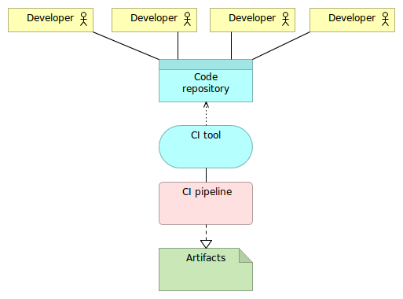Continuous deployment
CI pipeline

Continuous deployment
Continuous delivery process
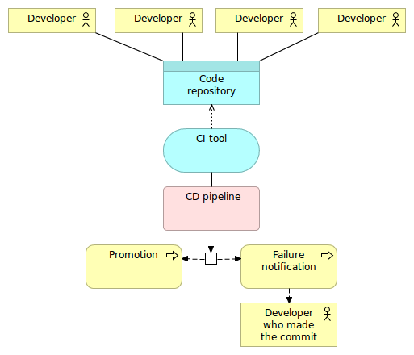Continuous deployment
Continuous deployment pipeline
Containers (Docker)
Shipping container is an object for holding or transporting something

- Isolated
- Immutable
- Reliable
- Self-sufficient
- Scalable
Containers (Docker)
VMs vs Containers
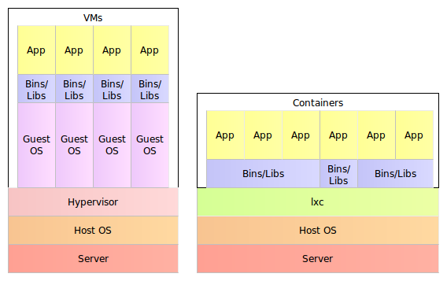Containers (Docker)
Self-sufficient container

Containers (Docker)
Container with the separate DB

Monolithic applications
- Single unit
- Time increases complexity and size
- Time decreases development, testing and deployment speed
- Layers
- Change is hard and with risks
- Scaling = multiplication of the entire application
Monolithic applications
Early
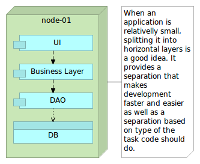Monolithic applications
Later
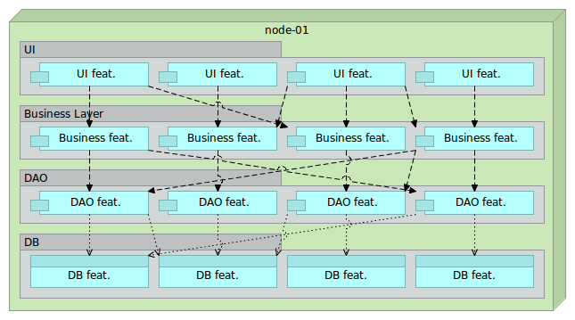Monolithic applications
Scaling
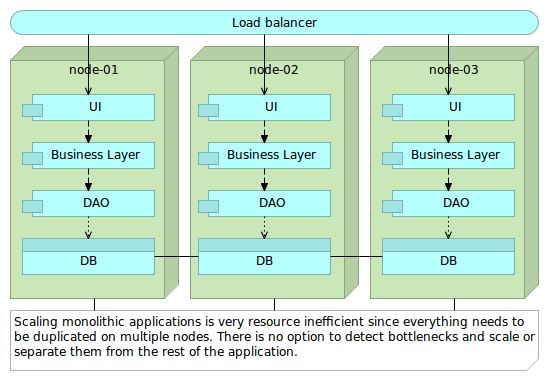Microservices
Applications that fit into a screen
- System composed of small services
- Autonomy/independence
- Data exchange through APIs
- Bounded context
Microservices
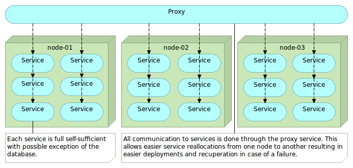Object-Oriented Design
The big idea is 'messaging'. The key in making great and growable systems is much more to design how its modules communicate rather than what their internal properties and behaviors should be.- Alan Kay
Single Responsibility Principle
Gather together those things that change for the same reason, and separate those things that change for different reasons- Robert C. Martin
Linux = Microservices
ps aux | grep jav[a] | awk '{print $2}' | xargs kill
Microservices
Key Aspects
- One thing or one functionality
- Any tools or languages
- Truly loosely coupled
- Teams independence
- Easier testing and CD
- Decentralization
Microservices
Disadvantages
- Increased operational and deployment complexity
- Configuration Management
- Containers (Docker)
- Work shifted from development to DevOps
- Remote process calls
Microservices
Advantages
- Scaling
- Resilience / fault isolation
- Innovation
- Size
- Decoupling
- Deployment
- No need for long term commitment
Microservices
Best Practices
- Containers (Docker)
- Reverse proxy
- Minimalist approach
- CM is a must
- Cross functional teams
- API versioning
Deployment
- Big vs small
- Mutable vs immutable
Deployment
Mutable Monster Server
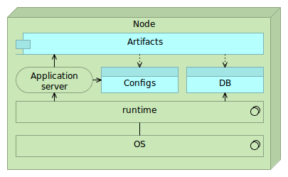
Deployment
Immutable Server
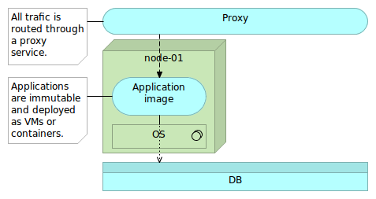
Deployment
Immutable Server
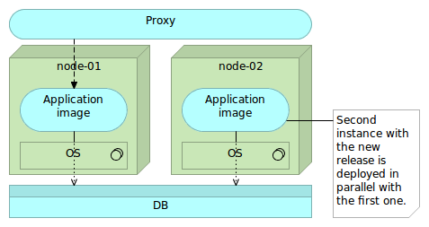
Deployment
Immutable Server
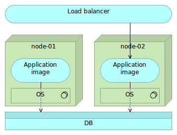
Deployment
Immutable Server
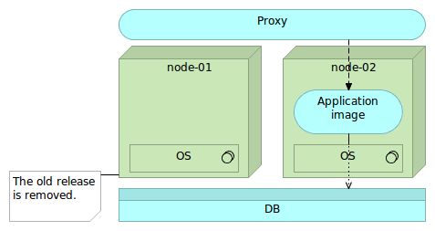
Deployment
Immutable Micro Services
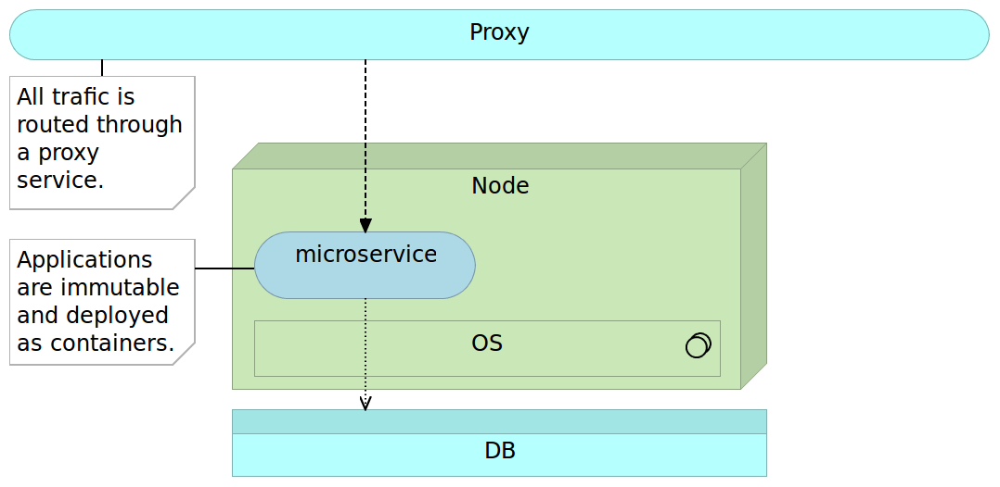
Deployment
Immutable Micro Services
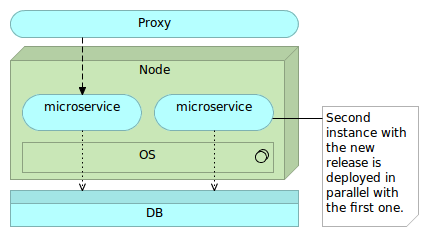
Deployment
Immutable Micro Services
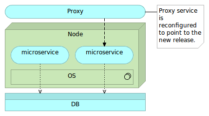
Deployment
Immutable Micro Services
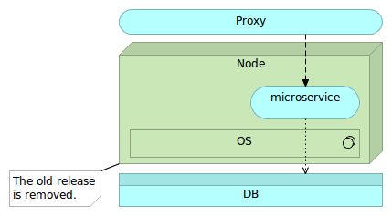
Development Environment
- Vagrant
- Docker
Development Environment
Create Virtual Machine
git clone https://github.com/vfarcic/books-ms.git
cd books-ms
vagrant plugin install vagrant-cachier
vagrant up dev
Development Environment
Vagrantfile
Vagrant.configure(VAGRANTFILE_API_VERSION) do |config|
config.vm.box = "ubuntu/trusty64"
config.vm.synced_folder ".", "/vagrant"
config.vm.provider "virtualbox" do |v|
v.memory = 2048
end
config.vm.define :dev do |dev|
dev.vm.provision :shell, path: "bootstrap.sh"
dev.vm.provision :shell,
inline: 'ansible-playbook \
/vagrant/ansible/dev.yml -c local -v'
end
if Vagrant.has_plugin?("vagrant-cachier")
config.cache.scope = :box
end
end
Development Environment
Inside Virtual Machine
vagrant ssh dev
ansible --version
docker --version
docker-compose --version
cd /vagrant
ll
Development Environment
Front-end tests
sudo docker run -it \
-v $PWD/client/components:/source/client/components \
-v $PWD/client/test:/source/client/test \
-v $PWD/src:/source/src \
-v $PWD/target:/source/target \
-v /data/tests/db:/data/db \
-p 8080:8080 \
--env TEST_TYPE=watch-front \
vfarcic/books-ms-tests
Development Environment
Tests with Docker Compose
sudo docker-compose -f docker-compose-dev.yml up feTestsLocal
sudo docker-compose -f docker-compose-dev.yml run testsLocal
Development Environment
Stop the VM
exit
vagrant halt dev
Deployment Pipeline
- Checkout the code
- Run pre-deployment tests
- Compile and/or package the code
- Build the container
- Push the container to the registry
- Deploy the container to the production server
- Integrate the container
- Run post-deployment tests
Deployment Pipeline
Creating CD VM
cd ../
git clone https://github.com/vfarcic/ms-lifecycle.git
cd ms-lifecycle
vagrant up cd prod
vagrant ssh cd
Deployment Pipeline
Checking out the code
git clone https://github.com/vfarcic/books-ms.git
cd books-ms
Deployment Pipeline
Running pre-deployment tests and compiling and/or packaging the code
sudo docker-compose -f docker-compose-dev.yml run --rm testsLocal
ll target/scala-2.10/
Deployment Pipeline
Building Docker containers
cat Dockerfile
sudo docker build -t vfarcic/books-ms .
Deployment Pipeline
Running containers (Docker)
Docker
sudo docker run -d --name books-ms-db mongo
sudo docker run -d --name books-ms \
-p 8080:8080 \
--link books-ms-db:db \
vfarcic/books-ms
sudo docker exec -it books-ms bash
env | grep DB
exit
sudo docker ps -a
sudo docker logs books-ms
sudo docker rm -f books-ms books-ms-db
sudo docker ps -a
Deployment Pipeline
Running containers
Docker Compose
sudo docker-compose -f docker-compose-dev.yml up -d appLocal
cat docker-compose-dev.yml
sudo docker-compose ps
sudo docker ps -a
sudo docker-compose logs app
Deployment Pipeline
Running containers
cURL
curl -H 'Content-Type: application/json' -X PUT -d \
'{"_id": 1,
"title": "My First Book",
"author": "John Doe",
"description": "Not a very good book"}' \
http://localhost:8080/api/v1/books | python -mjson.tool
curl -H 'Content-Type: application/json' -X PUT -d \
'{"_id": 2,
"title": "My Second Book",
"author": "John Doe",
"description": "Not a bad as the first book"}' \
http://localhost:8080/api/v1/books | python -mjson.tool
curl -H 'Content-Type: application/json' -X PUT -d \
'{"_id": 3,
"title": "My Third Book",
"author": "John Doe",
"description": "Failed writers club"}' \
http://localhost:8080/api/v1/books | python -mjson.tool
curl http://localhost:8080/api/v1/books | python -mjson.tool
curl http://localhost:8080/api/v1/books/_id/1 | python -mjson.tool
Deployment Pipeline
Pushing containers to the registry
sudo docker tag vfarcic/books-ms 10.100.198.200:5000/books-ms
sudo docker push 10.100.198.200:5000/books-ms
Deployment Pipeline
Checkout the codeRun pre-deployment testsCompile and/or package the codeBuild the containerPush the container to the registry- Deploy the container to the production server
- Integrate the container
- Run post-deployment tests
Configuration Management in the Docker World
- CFEngine
- Puppet
- Chef
Configuration Management in the Docker World
Configuring the Production Environment
cd /vagrant/ansible
ansible-playbook prod.yml -i hosts/prod
ansible-playbook prod.yml -i hosts/prod
Configuration Management in the Docker World
Production environment Ansible playbook
cat prod.yml
cat roles/docker/tasks/main.yml
cat hosts/prod
Deployment Pipeline (Part 2)
Checkout the codeRun pre-deployment testsCompile and/or package the codeBuild the containerPush the container to the registry- Deploy the container to the production server
- Integrate the container
- Run post-deployment tests
Deployment Pipeline (Part 2)
Deploying containers to the production server
ssh-keygen # Answer with the Enter key to all questions
ssh-copy-id 10.100.198.201 # Use vagrant as the password
ssh 10.100.198.201
GITHUB_OWNER=vfarcic
SERVICE_NAME=books-ms
wget https://raw.githubusercontent.com/$GITHUB_OWNER/$SERVICE_NAME/master/docker-compose.yml
cat docker-compose.yml
sudo docker-compose up --allow-insecure-ssl -d app
Deployment Pipeline (Part 2)
Post-deployment verification
sudo docker inspect vagrant_app_1
PORT=$(sudo docker inspect \
--format='{{(index (index .NetworkSettings.Ports "8080/tcp") 0).HostPort}}' \
vagrant_app_1)
echo $PORT
curl -H 'Content-Type: application/json' -X PUT -d \
"{\"_id\": 1,
\"title\": \"My First Book\",
\"author\": \"John Doe\",
\"description\": \"Not a very good book\"}" \
http://localhost:$PORT/api/v1/books | python -mjson.tool
curl -H 'Content-Type: application/json' -X PUT -d \
"{\"_id\": 2,
\"title\": \"My Second Book\",
\"author\": \"John Doe\",
\"description\": \"Not a bad as the first book\"}" \
http://localhost:$PORT/api/v1/books | python -mjson.tool
curl -H 'Content-Type: application/json' -X PUT -d \
"{\"_id\": 3,
\"title\": \"My Third Book\",
\"author\": \"John Doe\",
\"description\": \"Failed writers club\"}" \
http://localhost:$PORT/api/v1/books | python -mjson.tool
curl http://localhost:$PORT/api/v1/books | python -mjson.tool
curl http://localhost:$PORT/api/v1/books/_id/1 | python -mjson.tool
Deployment Pipeline (Part 2)
Stopping Production Node
exit # Exit prod
exit # Exit cd
vagrant halt prod # Stop prod VM
Deployment Pipeline (Part 2)
Checkout the codeRun pre-deployment testsCompile and/or package the codeBuild the containerPush the container to the registryDeploy the container to the production server- Integrate the container
- Run post-deployment tests
Service Discovery
- Service registration
- Service discovery
Service Discovery
Single node
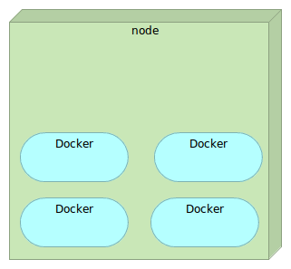Service Discovery
Multiple nodes
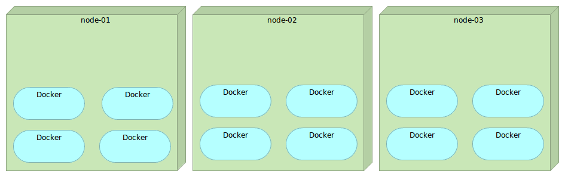Service Discovery
Tools
- Manual configuration
- Zookeeper
- etcd / Registrator / confd
- Consul / Registrator / consul-template
Service Discovery
Consul Ansible playbook
vagrant up serv-disc-01 serv-disc-02 serv-disc-03
vagrant ssh cd
cat /vagrant/ansible/hosts/serv-disc
cat /vagrant/ansible/roles/consul/tasks/main.yml
cat /vagrant/ansible/roles/consul/defaults/main.yml
cat /vagrant/ansible/host_vars/10.100.197.201
cat /vagrant/ansible/consul.yml
Service Discovery
Setting up Consul
ansible-playbook \
/vagrant/ansible/consul.yml \
-i /vagrant/ansible/hosts/serv-disc
curl 10.100.197.201:8500/v1/catalog/nodes \
| python -mjson.tool
Service Discovery
Consul
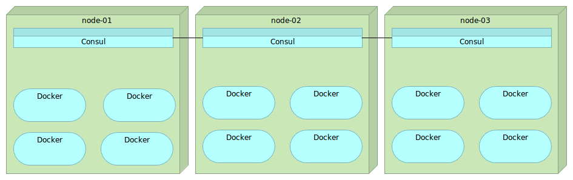Service Discovery
Key/value store: PUT
curl -X PUT -d 'this is a test' \
http://10.100.197.201:8500/v1/kv/msg1
curl -X PUT -d 'this is another test' \
http://10.100.197.202:8500/v1/kv/messages/msg2
curl -X PUT -d 'this is a test with flags' \
http://10.100.197.203:8500/v1/kv/messages/msg3?flags=1234
Service Discovery
Key/value store: GET/DELETE
curl http://10.100.197.203:8500/v1/kv/?recurse \
| python -mjson.tool
curl http://10.100.197.202:8500/v1/kv/msg1 \
| python -mjson.tool
curl http://10.100.197.201:8500/v1/kv/msg1?raw
curl -X DELETE http://10.100.197.201:8500/v1/kv/messages/msg2
curl -X DELETE http://10.100.197.202:8500/v1/kv/?recurse
Service Discovery
Registrator Ansible playbook
cat /vagrant/ansible/roles/registrator/tasks/main.yml
cat /vagrant/ansible/roles/registrator/defaults/main.yml
Service Discovery
Setting up Registrator
ansible-playbook \
/vagrant/ansible/registrator.yml \
-i /vagrant/ansible/hosts/serv-disc
Service Discovery
Consul / Registrator

Service Discovery
Registering service
exit # Exit cd
vagrant ssh serv-disc-01
sudo docker run -d --name nginx \
--env SERVICE_NAME=nginx \
--env SERVICE_ID=nginx \
-p 1234:80 \
nginx
curl http://10.100.197.201:8500/v1/catalog/service/nginx \
| python -mjson.tool
Service Discovery
Registering service again
sudo docker run -d --name nginx2 \
--env "SERVICE_ID=nginx2" \
--env "SERVICE_NAME=nginx" \
--env "SERVICE_TAGS=balancer,proxy,www" \
-p 1111:80 \
nginx
curl http://localhost:8500/v1/catalog/service/nginx \
| python -mjson.tool
Service Discovery
consul-template Ansible playbook
cat /vagrant/ansible/roles/consul-template/tasks/main.yml
cat /vagrant/ansible/consul-template.yml
Service Discovery
Setting up consul-template
ansible-playbook \
/vagrant/ansible/consul-template.yml \
-i /vagrant/ansible/hosts/serv-disc
Service Discovery
Consul / Registrator / consul-template
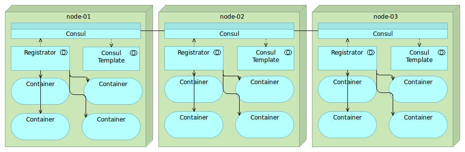Service Discovery
Running consul-template
exit # Exit cd node
vagrant ssh serv-disc-01 # Enter serv-disc-01
curl http://localhost:8500/v1/catalog/service/nginx \
| python -mjson.tool
consul-template \
-consul localhost:8500 \
-template "/data/consul-template/example.ctmpl\
:/tmp/example.conf" \
-once
cat /tmp/example.conf